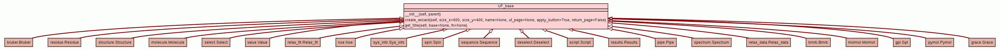

Trees
Indices
Help
relax
Package gui
::
Package user_functions
::
Module base
:: Class UF_base
[
hide private
]
[
frames
] |
no frames
]
Class UF_base
source code

User function GUI element base class.
Instance Methods
[
hide private
]
__init__
(
self
,
gui
,
interpreter
)
Set up the user function class.
source code
setup
(
self
)
Dummy method to be overwritten.
source code
Trees
Indices
Help
relax
Generated by Epydoc 3.0.1 on Fri Aug 12 16:04:01 2011
http://epydoc.sourceforge.net